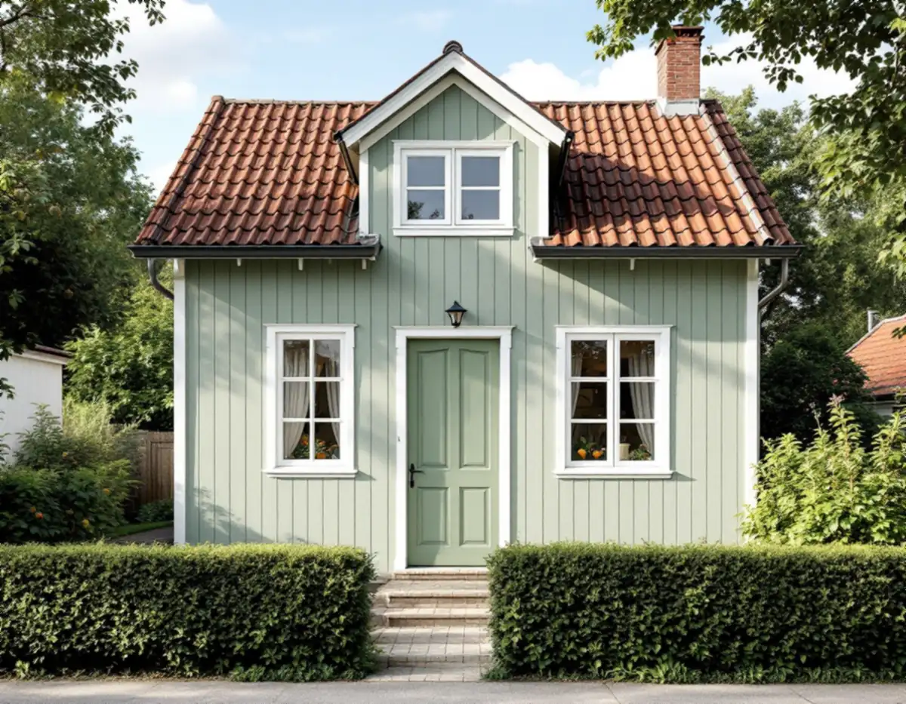

Fönster för fönster
Vi går igenom varje båge och karm, känner efter röta och tittar på kitt, beslag och färg.
I Olovslund, Norra Ängby och de andra småstugeområdena sitter fönstren i liv med panelen, så som typritningarna en gång bestämde. Geal Entreprenad AB renoverar befintliga fönster i Bromma. Vi lagar bågar och karmar, kittar om, målar med linoljefärg och tätar, så att originalfönstren kan sitta kvar.

Stockholms stads vägledning Varsam utveckling av småhus- och villaområden berättar att småstugorna kom till för att familjer med låga inkomster skulle kunna bygga ett eget hem. Systemet med självbyggeri startade i början av 1920-talet, först i privat regi och sedan i stadens, och de första stugorna i Pungpinan och Olovslund stod klara 1927. Därefter följde bland annat Norra Ängby, och under de följande 30 åren byggde stadens småstugebyrå ut en rad småstugeområden.
Kraven var att husen skulle vara billiga och lätta att uppföra, och det ledde till standardisering. Stugorna byggdes uteslutande i trä med fönstren placerade i fasadliv. Olovslund och Norra Ängby är utpekade som riksintressen, och enligt vägledningen har förändringarna huvudsakligen skett mot trädgården, så att den ursprungliga karaktären i gaturummet är relativt välbevarad. Vi räknar därför med att gatufasadens fönster ofta är värda att behålla och renovera.
Stadsbyggnadskontoret samlade i slutet av 1970-talet alla typritningar för de stugor som byggdes mellan 1927 och 1957. Sammanställningen finns hos stadsbyggnadskontoret och på webbplatsen Stockholmskällan. Vid en renovering använder vi den gärna som facit, om en båge eller spröjs har bytts ut under åren. Vägledningen råder att karaktärsskapande material, kulörer, byggnadsdelar och detaljer tas tillvara eller återskapas i så stor utsträckning som möjligt.
Stadens sida om fönster och dörrar räknar bland annat nytt material eller ny kulör, ändrade dimensioner, proportioner eller profiler på karmar, bågar och spröjsar och en annan upphängning som ändringar av ett fönster. Om en sådan ändring kräver lov beror på byggnaden. En renovering där material, kulör, profiler och indelning behålls finns inte med i den listan. Vill du byta kulör på bågarna visar Stadsmuseets karta om huset är utpekat som kulturhistoriskt värdefullt, och kartan ger enligt staden en första indikation på om bygglov behövs.
Länsstyrelsernas informationsblad om fönster skiljer på två nivåer. En enklare renovering räcker om bågen är stabil, pluggarna i hörnen inte har krupit ut, hörnbeslagen inte har rostat och det inte finns röta, vilket man känner efter med en kniv. Då lyfts bågarna av och fönsterhålet täcks med en skiva medan löst kitt och lös färg tas bort, den blottade falsen grundas med utspädd färg och bågen kittas och målas i tunna lager.
Är bågen skev, hörnjärnen rostiga och deformerade eller finns röta i båge eller karm måste fönstret tas isär. Hörnjärnen demonteras och rostskyddas, glaset lyfts ur, pluggarna dras ut och de skadade delarna skarvas med nytt virke av god kvalitet. Bladet påminner om att gamla bågar är sammanfogade med tappar och träplugg utan lim, och därför går att ta isär och laga. Har bågen målats med plastfärg behöver all färg bort innan linoljefärgen läggs på.
Riksantikvarieämbetets skrift om fönster råder att gamla textillister byts mot gummilister i rätt bredd och tjocklek, och skriver att ett gammalt fönster med rätt list kan bli lika tätt som ett nytt. Det är innerbågen, inte ytterbågen, som ska tätas. Stugorna från 1940- och 1950-talen är byggda under den period, 1940–1970, då Boverket säger att byggnader främst innehåller asbest, och fönsterkitt finns med på verkets lista över material som kan innehålla asbest. På de husen tar vi prov innan gammalt kitt skrapas bort.
Ibland är ett byte det rimliga. Boverkets energiguide skriver att fönster i dåligt skick kan behöva bytas, och att lönsamheten för nya energieffektiva fönster då kan bedömas som bättre, eftersom alternativkostnaden för att renovera de gamla är hög. Är karmen genomrutten, eller har stugan redan fått fönster som inte passar huset, kan du läsa om fönsterbyte i Bromma och om hur vi arbetar med fönsterbyte i stort. Behöver panelen runt fönstret lagas, se snickare i Bromma.
Vi går igenom varje båge och karm, känner efter röta och tittar på kitt, beslag och färg.
Indelning och placering stäms av mot stugans ritning när den finns.
Det framgår vilka bågar som målas om och vilka som tas isär.
Fönsterhålen täcks med skivor medan bågarna skrapas, lagas och kittas.
Grundning, mellan- och slutstrykning med torktid emellan.
Gummilist på innerbågen och gångjärn som justeras så att bågen sluter.
På Skatteverkets lista över rotarbeten för småhus finns att reparera eller byta ut fönster, att måla fönster och att reparera fönsterbleck. Det betyder att både snickeriet, kittningen och målningen på en småstuga kan ge avdrag. I Norra Ängby finns också radhus. Är ett radhus en bostadsrätt ger bara arbete på fönstrets insida avdrag, till exempel att byta glaset i den inre bågen eller måla insidan.
Avdraget är 30 procent av arbetskostnaden, högst 50 000 kr per person och år och högst 75 000 kr tillsammans med rutavdrag. Material och resor ger inget avdrag. Vi drar avdraget direkt på fakturan.
Antalet bågar, hur många som måste tas isär, hur mycket virke som behöver skarvas, om gammal plastfärg ska bort och om innerbågen ska få energiglas väger tyngst. Efter ett kostnadsfritt platsbesök får du ett skriftligt kostnadsförslag.
Byta eller renovera fönster.
Fönsterbyte i Stockholm →Takbyte, takbesiktning och plåtarbeten.
Takläggare i Bromma →Trädgårdsstäder, tegel och funkistak.
Takrenovering i Bromma →Trädgårdsstad, karta och 30 m² inom plan.
Attefallshus i Bromma →Vind, bärande väggar och en andra bostad.
Byggföretag i Bromma →Kulörval och färgtyp i trädgårdsstaden.
Fasadmålning i Bromma →Småspröjs, småstugor och funkis i Bromma.
Fönsterbyte i Bromma →Trävillor, småstugor och funkisvillor.
Badrumsrenovering i Bromma →Trädgårdsstäder, småstugor och funkis i Bromma.
Fasadrenovering i Bromma →Villor i trädgårdsstäderna och lägenheter i smalhus.
Golvläggare i Bromma →Slipa furugolvet och behandla med lut och såpa.
Golvslipning i Bromma →Imkanal, småstugor och trävillor.
Köksrenovering i Bromma →Fasad och interiör i Brommas villastäder.
Målare i Bromma →Kupor, låga tak och bleck i Bromma.
Plåtslagare i Bromma →Verandor, entréer och altaner.
Snickare i Bromma →Lertegel, småstugor och solceller i Bromma.
Takbyte i Bromma →Spara och ersätta gamla tapeter.
Tapetsering i Bromma →Småstugor, trädgårdsstad och prickmark.
Tillbyggnad i Bromma →Hela villan i rätt ordning.
Totalrenovering i Bromma →